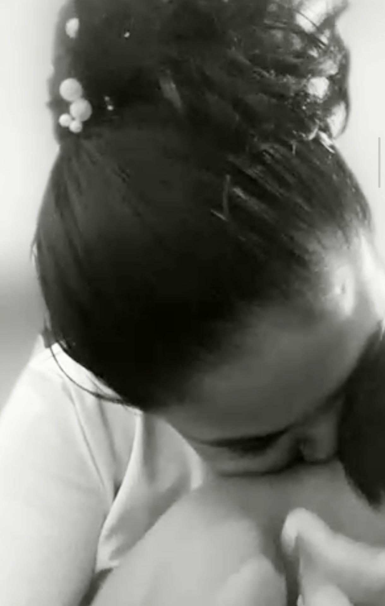
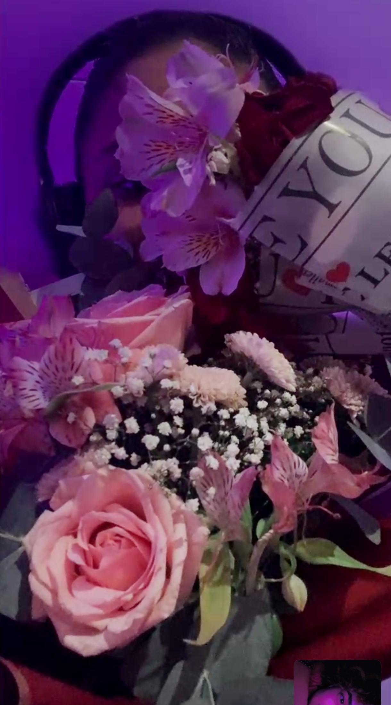
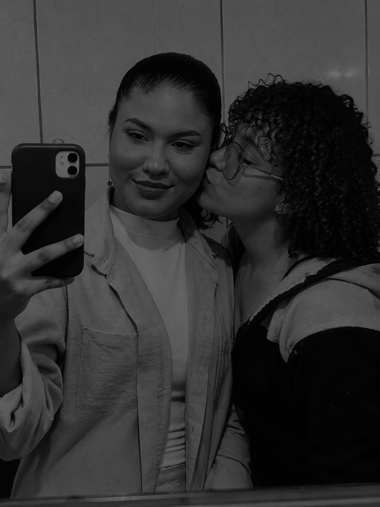
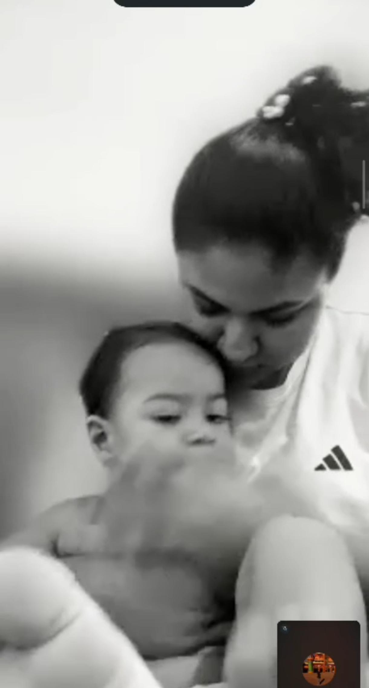

Nosso mundinho.
Foi a onde conversamos sobre os sentimentos.
Foi nesse dia que eu vim para casa dos meus pais
O dia em que eu decidi que a minha melhor escolha era você
Nosso priomeiro dia dos namorados e a primeira vez que ganhei flores.
Foi nesse dia a onde eu decidi que queria voccê na minha vida, que queria te dar o título de miha namorada.




Oie, minha vidaaa!
Bom, vamos lá... Chorei muito lendo o seu texto. As palavras que foram ditas ali... Eu jamais tinha lido algo tão lindo direcionado à minha pessoa. Você me encanta todos os dias, me faz apaixonar por você todos os dias e, desde que começamos a conversar, nenhum dia tem sido igual; cada dia tem sido único.
Você falou lá do começo, sobre a call no X e depois no WhatsApp, falou sobre os meus gay panics... Mas tem algumas coisas que você não sabe. A primeira vez que você apareceu, meu mundo deu uma parada; eu não parava de olhar para você. Lembro que você estava na cozinha e só mostrava dos olhos para baixo, e ali eu já ficava te admirando, mas com vergonha. Era muito engraçado porque, sempre que você não estava na call, eu conseguia soltar a Ray, falava e conversava. Mas quando você subia, meu Deus, eu travava! Meu coração disparava e meu rosto ficava vermelho. E quando você aparecia apenas de sutiã? Eu ficava para morrer, prestes a ter um treco! Tentava disfarçar, mas minha cara sempre me entregava através da vermelhidão no rosto. Eu não entendia, realmente, o porquê de sentir aquilo por uma pessoa que tinha visto poucas vezes e com quem nunca tinha tido uma interação no privado, pois tinha vergonha de mandar mensagem e medo de ser invasiva, afinal, não éramos íntimas.
Até que chegou um dia em que estávamos eu, você e mais duas pessoas. Você contou uma pequena parte da sua história e eu fiquei em completo silêncio. Eu já tinha muita dificuldade em falar nas calls, mas ali foi porque vi o quão forte você é. Pensei: "Caralho, essa mulher passou por isso e está aqui? Está seguindo em frente?". Foi ali que minha admiração por você começou. E isso era apenas uma pequena parte de tudo o que você já passou — infelizmente, coisas que você não merecia.
Bom, depois disso, eu te mandei a primeira mensagem. A primeira de todas foi aquele vídeo, né? Mas falando de escrita, te mandei o meu primeiro textinho, toda envergonhada e com receio. Você demorou um pouquinho para responder. Na verdade, respondeu em uma ligação, se não estou enganada, ou foi em um Space. Falou que tinha acabado de ver e que achou super fofo da minha parte, e eu morrendo de vergonha. Isso foi no dia 16/05/2026, às 14 horas, para ser mais exata.
No outro dia, 17/05/2026, foi um dia em que ficamos em call com outras pessoas até de manhã e, depois, ficamos sozinhas. Lembro de uma pessoa comentando, brincando: "A Ray vai conseguir ficar sozinha contigo na call, Duda?". E eu realmente ia desligar, kkk, porque estava com muita vergonha! Mas decidi engolir essa vergonha e ficar na call contigo. Ainda bem que não desliguei, porque foi ali que começamos a conversar mais no privado e a ter uma sintonia melhor. Nesse dia, à noite, minha energia acabou, mas acredito que, se não tivesse acabado, ficaríamos em call a noite toda de novo.
Bom, aí chegou a call que começou no dia 18/05/2026, e foi ali que as coisas mudaram foi a onde você conheceu a Raissa… E se me falassem que eu iria descobrir que a Duda tinha calafrios comigo, eu diria que era mentira. Até porque eu conhecia a "Duda", né? A mulher que brincava com todos nos Spaces, que era desenrolada, engraçada, a pessoa que sempre estava com a "ADM aberta". Mas aí é que está: até então, eu conhecia a Duda, mas foi a partir desse dia que conheci a Maria Eduarda.
Foi na madrugada do dia 19/05/2026 que eu soube dos seus gostos nerds, sobre filmes, sobre gostar de HQs, de ficção científica, de super-heróis... E, principalmente, descobri que seu filme favorito era A Bela e a Fera. Achei isso super fofo, porque a história deles é algo incrível: ela se apaixona pelo que ele é e não pela aparência; ela o enxerga além daquela barreira que ele criou. Da mesma maneira que você me enxergou…
Enfim, depois você foi atender seus pacientes, mas não queria desligar e me deixou na call, no cantinho, enquanto fazia suas coisinhas. Quando foi de tarde, teve o textinho do X e eu tentei ser o menos "gay" possível para não mostrar que ali eu já amava você, que ali eu já estava me apaixonando. Eu não poderia dizer isso, afinal, eu estava em um casamento e não queria te envolver nessa confusão. Você já tinha tantas questões e tantos problemas, e eu não queria ser apenas mais um conflito na sua vida. Mas aí alguém devolveu o textinho, e eu chorei. Chorei muito e tive outro gay panic lendo! Foi também naquele textinho que você expôs que eu era nerd, kkk.
As horas foram passando até que, por volta das 15:30 do dia 19/05/2026, começamos a falar na call sobre essa vergonha que eu sentia. Como eu tinha vergonha de falar, escrevi sobre isso, e depois que escrevi, descobri que você também ficava um pouco tímida comigo. A conversa foi fluindo até que chegamos na parte dos sentimentos e descobrimos que ambas estavam sentindo o mesmo: os mesmos calafrios, o coração disparado, a vontade de ficar o tempo todo uma com a outra... E eu acho que foi ali, naquele exato momento, às 16:10 daquele dia, que as nossas almas se conectaram. Meu coração realmente se tornou todo seu. Foi nesse dia que você atravessou todas as minhas barreiras, todos os meus bloqueios, e acessou a minha parte mais vulnerável. Bom, mas como você mesma disse, tinha apenas uma questão que não era tão pequena: o meu casamento. Mesmo que já fizesse meses que eu não estava feliz, que não estava bem... Eu ainda estava casada. Ainda tinha uma decisão para ser tomada, um passo a ser dado. E, mesmo com toda essa confusão e com essa situação, você escolheu ficar. Sempre dizia que, independentemente da minha escolha, você ficaria — mesmo que fosse apenas na amizade, você estaria ali. Mas tinha uma coisa que você não sabia: eu já tinha escolhido você. Eu já queria estar com você.
A semana foi passando e fomos ficando cada vez mais próximas, até que chegou o dia 23/05/2026, o dia em que tive que falar com meus pais. Foi o dia em que minha vida virou de cabeça para baixo. Mas, apesar de tudo, uma coisa permaneceu intacta: os nossos sentimentos. Uma pessoa permaneceu: você. E eu serei eternamente grata por isso. Enfim, a cada dia que passava, fomos nos conhecendo, esse sentimento só aumentava e eu me apaixonava mais e mais por você. Naquela mesma semana, aconteceram algumas situações muito difíceis com você, e acho que nunca me preocupei tanto com alguém ao ponto de doer em mim, ao ponto de eu só querer estar ao seu lado, ao ponto de quase comprar uma passagem para ir aí na semana seguinte. As coisas ficaram difíceis, mas, apesar da dificuldade, tínhamos uma à outra. Você escolheu lutar e permanecer na minha vida, e eu escolhi estar com você. Escolhi você e escolheria mil vezes, nos dias bons e nos dias ruins.
Os dias foram passando, cada uma segurando a mão da outra sem soltar. Você me dava apoio mesmo estando mal, e muitas vezes eu tinha receio disso, porque me preocupava (e me preocupo) tanto com você que parecia que as minhas questões eram o menor dos problemas. Ver a pessoa por quem sou completamente apaixonada não estar bem me doía todos os dias. Meu coração ardia quando você chorava, quando estava mal, e foi ali que tomei algumas decisões. Tomei a decisão de que iria melhorar em tudo para poder te dar todo o apoio que você merece; decidi que você era a pessoa de quem eu queria cuidar, apoiar, zelar, e com quem eu queria ter um futuro — afinal, você já fazia parte dos meus planos.
Então, no dia 28/05/2026, tomei a decisão de encerrar meu relacionamento, de colocar um ponto final. Foi o dia em que fiz a minha escolha sobre tudo: sobre o meu futuro e sobre nós. Porém, eu ainda não podia falar a "palavra-chave", até porque tinha acabado de terminar e meu ex-parceiro não tinha aceitado muito bem. Ele tinha esperanças de que seria apenas um tempo, apenas uma fase. Como a conversa foi pelo WhatsApp, para ele ainda tinham ficado algumas pontas soltas e, de alguma forma, precisávamos ter uma conversa pessoalmente para colocarmos os pingos nos is, mas no momento eu não conseguia.
Bom, os dias foram passando e fomos seguindo, até acontecer aquela situação com o grupo. Me doeu tanto ouvir o que disseram sobre você... Não porque eu acreditei, pelo contrário! Foi porque eu conhecia a Maria Eduarda e eles não. Me doeu ver eles inventando coisas sobre você. Em nenhum momento passou pela minha cabeça qualquer dúvida ou questionamento; eu escolhi acreditar em você, confiar em você. E foi a melhor escolha que fiz. Foi você.
Nesse dia, mesmo sem eu pedir, mesmo que eu não quisesse, você me provou e me mostrou as coisas... Enfim, os dias foram passando novamente até chegar a semana passada. Foi uma semana muito difícil, uma semana em que eu, de verdade, estava em desespero por te ver naquela situação, por não poder fazer mais por você, por não estar aí e por não conseguir te dar o apoio de que você precisava. Eu fiquei com muito medo — um medo que eu só tinha sentido uma única vez na vida. Foi uma semana muito difícil para você…
Até que chegou o dia 12, o Dia dos Namorados, o nosso primeiro dia 12. Eu queria, de alguma forma, animar o seu dia, porque você estava em um momento superestressante, precisava resolver algumas coisas e o seu banco também estava (e está) bloqueado... Te mandei o ursinho e a cartinha com o textinho do dia 12 (inclusive, era para ser maior, mas fiquei com dó da menina que ia escrever à mão e, no final, ela acabou imprimindo, kkk). Fiquei com receio de que você não gostasse; pensei em mandar outro buquê, mas queria tirar um pouco o hiperfoco das flores. No final, foi você quem me surpreendeu ao me mandar flores! Eu nunca chorei tanto. Foram as primeiras flores que ganhei na vida, mas eu não chorei por causa das flores em si, e sim pelo que elas significavam: significavam o nosso primeiro dia 12, significavam que o meu primeiro buquê foi da pessoa que eu mais amo, significavam o início de um ciclo.
Nesse dia, eu já queria dizer a palavra-chave... Mas ainda tinha uma pendência a ser resolvida, e foi o que resolvi no sábado. Foi quando coloquei os pingos nos is com o Guilherme, e foi também o dia em que tive uma das minhas piores crises por conta de tudo o que te falei. E a pessoa que estava lá era você: meu refúgio, meu lar... Você foi a única pessoa que eu queria naquele momento, a única que conseguiu me acalmar e me fazer sentir melhor. Foi ali que pensei: "Como eu amo essa mulher, como sou completamente apaixonada por ela!".
O domingo passou e chegou o dia 15, o dia do meu aniversário. Eu achava que você já tinha me surpreendido com tudo, até ler o seu texto... Até ler as coisas que você me disse, ler cada uma daquelas palavras e ver você dizendo que eu era o amor da sua vida. Foi nesse momento que eu decidi que não iria mais adiar, que ali era o momento exato e a hora certa. Então, eu te falei "LUA", a palavra proibida. Foi ali que decidi que queria você pelo resto da minha vida. Eu já tinha feito essa escolha internamente, mas foi ali que decidi verbalizar para você. E foi a melhor escolha que fiz, a minha melhor decisão. E, meu amor, amar você é a melhor coisa que poderia ter me acontecido. Amar você é incrível, é único, é sensacional, é especial, é divertido, é saudável. Amar você não dói; amar você é a melhor sensação que eu já tive na vida. Você me mostrou o que é o amor: que o amor não dói, não machuca, é doce e é leve.
Eu quero continuar ao seu lado para o resto da minha vida. Quero realizar meus sonhos ao seu lado, alcançar nossos objetivos e o nosso futuro, ter nossos filhos (um casal ou três, kkk). Quero poder ter uma mini Maria Eduarda, com os seus cabelos, os seus olhos, o seu sorriso, a sua boca... com a sua pastinha, para eu poder arrumar a franjinha dela. Quero ter um mini eu também (só que vai dar um trabalho danado, kkk!). Quero fazer tudo isso com você porque eu te amo, e a cada dia que passa, eu te amo cada vez mais. Hoje, eu percebo que não consigo mais viver sem você, sem a sua companhia, sem os nossos momentos, sem os nossos planos, sem o nosso futuro e sem os nossos filhos que ainda hão de vir. Eu te amo em todos os universos, minha Pateta favorita
E continuarei escolhendo você em cada vida, em cada tempo e em cada universo.